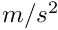
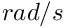
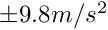

|
joyconlib
|
6軸センサー情報 [詳解]
#include <joyconlib.h>
フィールド | |
| float | acc_x |
| 加速度値 x | |
| float | acc_y |
| 加速度値 y | |
| float | acc_z |
| 加速度値 z | |
| float | gyro_x |
| ジャイロ値 x | |
| float | gyro_y |
| ジャイロ値 y | |
| float | gyro_z |
| ジャイロ値 z | |
6軸センサー情報
ジョイコンの6軸センサーは，3つの加速度センサーとジャイロセンサーからなる 各軸の向きなどは下記を参照
単位は加速度センサーが

，ジャイロセンサーが
で， 静止状態が0，ただし重力があるので重力（下）方向が約
となる